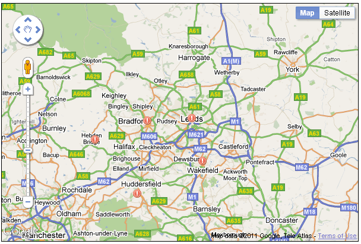
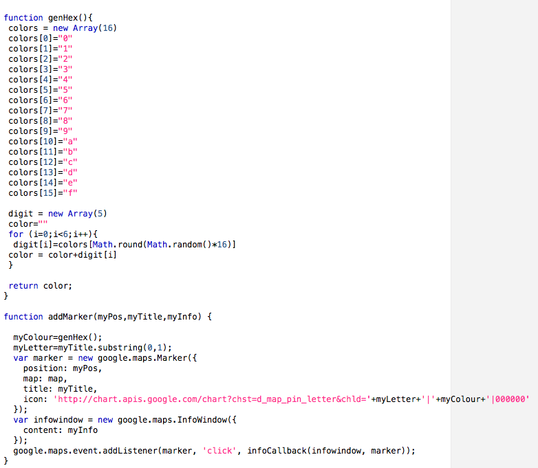

By default, markers are always drawn with the same icon. However, it is easy to provide a new icon for use with drawing markers.The same icon object can be used for multiple points, on the other hand it would also be possible to include additional fields in the map_data file to reference different icons for each point. The example below shows usage of the Marker() declaration which includes an addtional parameter specifying an alternative image to be used for the icon - in this case a icon showing an exclamation mark. As written, the script will search for the image file in the same directory from which the script was loaded. There are many collections of free icons on the web, see for example:
...
var marker = new google.maps.Marker({
position: myPos,
map: map,
title: myTitle,
icon: 'exclamation.png'
});
...

The approach used here is a simple way of changing the icon used for
markers. There is also a more flexible
approach, using the google.maps.MarkerImage()
object. Using this, we create a new image object as an instance of
MarkerImage() (supplying various properties), and then use that
image as the value for the icon property when we create the marker
(as was done using a filename in the example above). The MarkerImage object offers
precise control over placing of the icon relative to the defined location. As
well as setting the icon property for a marker, we can also set a
similar shadow property to supply the name of an image to be drawn
behind the marker as a shadow.
A different approach to creating and using custom markers is to use
dynamically generated icons. Just as the icon property of the marker can be
given the name of an image file, it can also be given a URL which will return
an icon. It is entirely possible to use a URL which will dynamically generate
an image, given some input parameters. The following figure shows the source code for two
functions: a revised version of addMarker(), and a supporting
function called genHex(). The genHex() function generates a random
string of 6 hexadecimal (base 16) values; this is an alternative way of
specifting colours in HTML: red, green and blue values are represented by three
pairs of hexadecimal values (two hexadecimal digits representing decimal values
between 0 and 255). The function also illustrates two methods available in the
JavaScript Math object -
round() and random().
The second part is the revised addMarker() function. This has
three changes compared to previous versions. Firstly, there is a call at the
top of the function to our new genHex() function, which will
return a random colour designation. This is followed by our next new line:
myLetter = myTitle.substring(0,1);
myTitle is a string passed into the addMarker()
function to provide a caption for the marker (and a title for the infowindow
box). It is a string object, and here we use substring(), one of
the methods attached to the JavaScript String object to
extract the first letter from the title (we have specified in this example the
substring from position 0 to position 1 in myTitle).
The final change is in the modification of the icon property in
the Marker() declaration. We have set the icon property as:
http://chart.apis.google.com/chart?chst=d_map_pin_letter&chld='+myLetter+'|'+myColour+'|000000
Here, we are using another API provided by Google, the Chart API. This API can dynamically generate a variety of different sorts of graphs and charts, and can also generate map pins. For icons, the specification is fairly simple: we must provide:
The icon type we have used is 'd_map_pin_letter'. The details are separated by '|' characters, and are the value of myLetter (the first letter of myTitle), the colour string generated by our genHex() function, and '000000', the colour specification string for black, which we want to use as the outline and text colour. There are many sorts of icons that the API can generate; for details see the Chart API site linked above.

This code can be downloaded HERE.